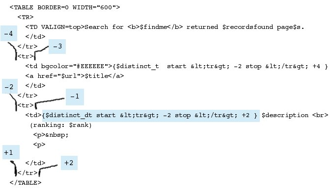
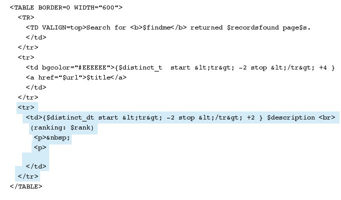
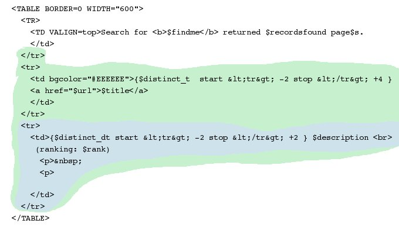
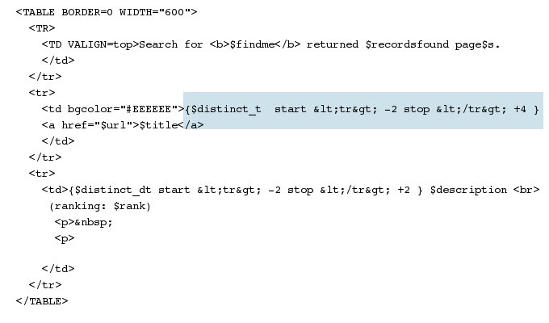
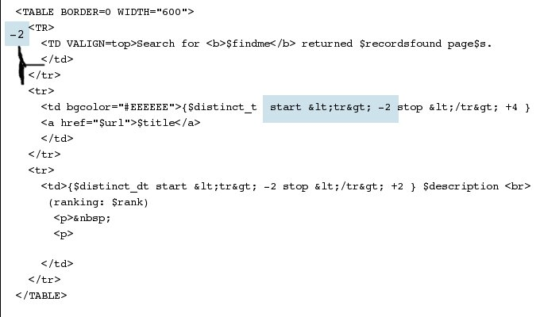
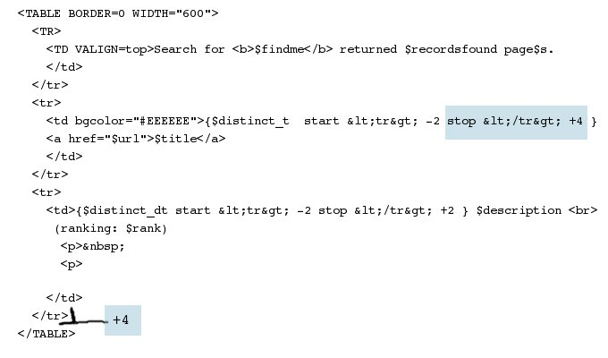

|
Home This document explains how looped areas of templates are created in Deft templates. We assume a working knowledge of HTML. The simplest Deft templates have no loops and only colums substituted into the template. Columns are denoted with Perl style variables e.g. $variable. Only scalars are allowed. If a variable does not occur in the data record, it will be left in the template undisturbed (this allows templates to be used as templates). Looping in Deft is controled by special columns in the data. Deft control columns are created by the Deft programmer using the special aggregation function dcc(). The memnonic for "dcc" is "declare control column". As far as the templates are concerned, it isn't important how dcc() works, just that such a column will work correctly with the template. There is a special part of the Deft template called the "loop control" which describes what portion of the template is controlled by each control column. Loop controls are surrounded by { } and must have a control column as the first thing inside the { }. The example below has two control columns: $distinct_t and $distinct_dt (respectively "distinct title" and "distinct title/description"). There are limits to the valid locations of various kinds of data and tags in HTML. In keeping with HTML coding rules, start and stop strings in the control specs are URI encoded. < becomes < and > becomes > This is the type of encoding that your HTML editor will use. If you aren't using an HTML editor you might choose to skip the encoding, although your raw template may not render in a web browser. Deft templates are 100% HTML compliant when encoding is used. The first control spec is "{$discinct_t start <tr> -2 stop </tr> +4}". The table below has a breakdown of the parts of the loop control.
To reiterate, a control loop is surrounded by { } and it has a controling column, as well as start and stop locations within the template. That's really it. Below is an example using the second loop control which is highlighted blue box. Incidently, the second loop is "inside" the first loop. Starting at the second loop control statement "{$distinct_dt start <tr> -2 stop </tr> +2}" and working backward (left, up) I've labeled four positions around each <tr>. Matches occur on both sides of <tr>. In the example below we are counting backward, so the markers have negative numbers. When you get to a <tr> the first side we encounter is -1, and after we pass <tr> you are at -2. The first side of the next <tr> is -3, and after passing <tr> we are at -4. The example loop control below goes backwards to -2. I labeled -3 and -4 only to illustrate where these occur. Going forward from the loop control, we see that the stop matches </tr> and will go to +2. We first encounter </tr> at +1, and after passing </tr> we are at position +2. 
Keeping all that in mind, the blue area below highlights the portion of the template controlled by the second loop control. The loop is one <tr>...</tr> tag, or one row in the table. Everytime this control column ($distinct_dt) has a new distinct value, it will create another row in the table. 
Building on what we've done so far, the two loops are highlighted below. The outer loop is green, and the inner loop in blue. Notice that both loops end in the same location. This is fine. Loops can contain other loops. However, loops can't over lap in such a manner that part of a loop is inside and part outside. 
Below is a second example as review. For this example, we will use the first loop control hightlighted in the image below.

In the image below the start section is highlighted. The start match is <tr> and is -2. We count backwards to the left side of <tr>.  Using the same example, in the image below, the
stop match is </tr> and we count forward +4. That takes us to
the location marked in the image on the right side of the lower
</tr>. We have passed two </tr> tags, and since we count
the first and second positions at each tag, we get to +4 after the
second </tr>.
 |